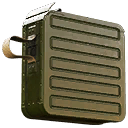

Damage by ammo and quality
The first table lists each ammo type the weapon can load. Damage is one projectile at the base value (Special quality), Armour and Comp. multiply it when the projectile hits an armour plate or a component, and Falloff is how the damage drops over distance. The second table works out one whole shot (damage × pellets × the quality multiplier) for every quality, at close range and before the difficulty setting.
| Ammo | Damage | Pellets | Armour | Comp. | Falloff / range |
|---|---|---|---|---|---|
7.62mm Armor-Piercing Ammoequipment_ammo_762_ap_01 | 33 | 1 | ×1.25 | ×0.75 | drops to 60% by ~550 m max 1,000 m |
7.62mm Full Metal Jacket Ammoequipment_ammo_762_fmj_01 | 33 | 1 | ×1 | ×1 | drops to 60% by ~550 m max 1,000 m |
| Ammo | Q1 | Q2 | Q3 | Q4 | Q5 | Q5 vs armour | Q5 vs components |
|---|---|---|---|---|---|---|---|
| 7.62mm Armor-Piercing Ammo | 16.5 | 20.5 | 24.8 | 29 | 33 | 41.2 | 24.8 |
| 7.62mm Full Metal Jacket Ammo | 16.5 | 20.5 | 24.8 | 29 | 33 | 33 | 33 |
| Quality | Dilapidated | Worn | Good | Exceptional | Special |
|---|---|---|---|---|---|
| Damage multiplier | ×0.5 | ×0.62 | ×0.75 | ×0.88 | ×1 |
- A Dilapidated copy does 50% of the damage of a Special one (×0.5 against ×1), so upgrading quality is a straight damage increase.
- Against armour plates, 7.62mm Armor-Piercing Ammo is best (×1.25 damage to armour).
Experimental ammo of this calibre
The game files flag these rounds as experimental-only, and this weapon has no experimental version. They are listed because they share its calibre; the damage column uses the Special multiplier for comparison.
| Ammo | Damage | Pellets | Armour | Comp. | Falloff / range | Effects |
|---|---|---|---|---|---|---|
7.62mm Shock Ammo Exp. onlyequipment_ammo_762_beta_01_q6 | 33 | 1 | ×1 | ×1 | drops to 60% by ~550 m max 1,000 m | Special effect not included (it lives in a separate effect file). |
7.62mm Tar Ammo Exp. onlyequipment_ammo_762_alpha_01_q6 | 33 | 1 | ×1 | ×1 | drops to 60% by ~550 m max 1,000 m | Special effect not included (it lives in a separate effect file). |
| Ammo | Q5 | Q5 vs armour | Q5 vs components |
|---|---|---|---|
| 7.62mm Shock Ammo | 33 | 33 | 33 |
| 7.62mm Tar Ammo | 33 | 33 | 33 |
Attachments1 fit
Every attachment the item table lists as compatible with this weapon (its compatibility list contains the weapon's ToolID 31). Attachments have qualities of their own; vision modules come in one quality only.
| Attachment | Type | Qualities | Nickname | |
|---|---|---|---|---|
 | PM-71 Extended Mag | Magazines | Q1 Q2 Q3 Q4 Q5 | PM-71M |
Augments24 of 28 fit
Augments go into slots that depend on quality. Following the in-game rules (as the Gen0 Editor applies them): Worn and Good weapons take one Primary augment, Exceptional and Special take a Primary and a Support augment, and Dilapidated and experimental weapons take none. A ✓ means the augment fits this weapon at that quality; the rules come from the game's equipment compatibility table (augments.json).
Primary augments
| Augment | Worn | Good | Exceptional | Special | Restriction | |
|---|---|---|---|---|---|---|
 | Acidic | ✓ | ✓ | ✓ | ✓ | – |
 | Adhesive Rounds | ✓ | ✓ | ✓ | ✓ | – |
 | EMP Detonation | ✓ | ✓ | ✓ | ✓ | – |
 | Health Stealing | ✓ | ✓ | ✓ | ✓ | – |
 | Machine Disarmer | ✓ | ✓ | ✓ | ✓ | – |
 | Prone Specialization | ✓ | ✓ | ✓ | ✓ | Melee weapons cannot use this augmentation. |
 | Rapid Reload | ✓ | ✓ | ✓ | ✓ | Melee weapons cannot use this augmentation. |
 | Scorching | ✓ | ✓ | ✓ | ✓ | Explosive weapons cannot use this augmentation. |
 | Sharpshooter | ✓ | ✓ | ✓ | ✓ | Melee weapons and explosive weapons cannot use this augmentation. |
 | Small Fryer | ✓ | ✓ | ✓ | ✓ | – |
 | Structure Destructor | ✓ | ✓ | ✓ | ✓ | – |
 | Titan Toppler | ✓ | ✓ | ✓ | ✓ | – |
 | Unstoppable Shells | ✓ | ✓ | ✓ | ✓ | Melee weapons and explosive weapons cannot use this augmentation. |
 | Uranium Infused | ✓ | ✓ | ✓ | ✓ | – |
Don't fit: Final Round (Only handguns can use this augmentation.); Trick Shot Master (Only shotguns and melee weapons can use this augmentation.)
Support augments
| Augment | Exceptional | Special | Restriction | |
|---|---|---|---|---|
 | Crouching Tiger | ✓ | ✓ | Melee weapons cannot use this augmentation. |
 | Hip Shooter | ✓ | ✓ | Melee weapons cannot use this augmentation. |
 | Hit and Run | ✓ | ✓ | – |
 | Oversized Magazine | ✓ | ✓ | Melee weapons and explosive weapons cannot use this augmentation. |
 | Quick Learner | ✓ | ✓ | – |
 | Scope Scout | ✓ | ✓ | Only weapons that can have a scope attached can use this augmentation. |
 | Skilled Spotter | ✓ | ✓ | – |
 | Slow and Steady | ✓ | ✓ | Melee weapons cannot use this augmentation. |
 | Sound Muffling | ✓ | ✓ | – |
 | Stabilization | ✓ | ✓ | Melee weapons cannot use this augmentation. |
Don't fit: Flurry of Blows (Only melee weapons can use this augmentation.); Power Attacker (Only melee weapons can use this augmentation.)
Skins0
The game has no weapon skins for this weapon.
Item IDs
The item hash of each quality, as save editors and the Gen0 Editor use them. Each quality is a separate item in the game's item table.
| Quality | Item ID | Icon |
|---|---|---|
| Dilapidated | 1218680565 |  |
| Worn | 113400730 | |
| Good | 2594039389 | |
| Exceptional | 3447968041 | |
| Special | 1591219034 | |
Where to find it
No copy of this weapon is placed by hand in the world files.
Ammo and related weapons
Ammo it loads: 7.62mm Armor-Piercing Ammo, 7.62mm Full Metal Jacket Ammo.
Experimental-only rounds of this calibre (not usable by this weapon, which has no experimental version): 7.62mm Shock Ammo, 7.62mm Tar Ammo.
Other weapons that load the same ammo: Automatgevär 4, AI-76 Assault Rifle, Kvm 59 Machine Gun, N144 Minigun, N60 Machine Gun, Vintovka 1891, Kotenok Sniper Rifle, S21.
Other machine guns: Kvm 89 Squad Automatic Weapon, Kvm 59 Machine Gun, N144 Minigun, N60 Machine Gun.